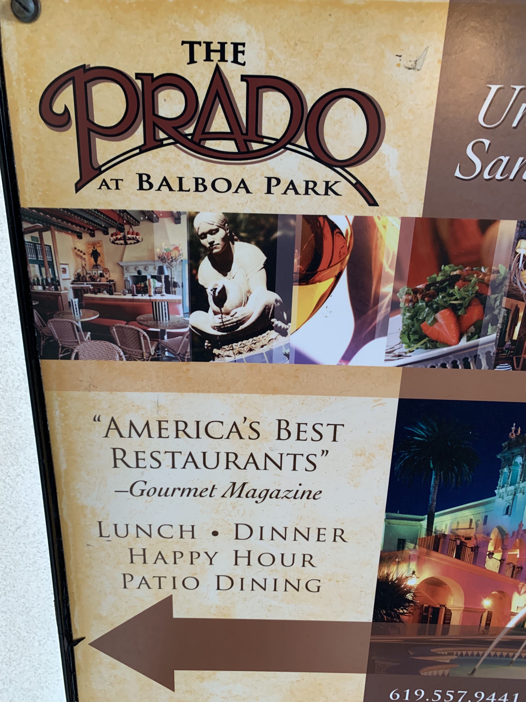
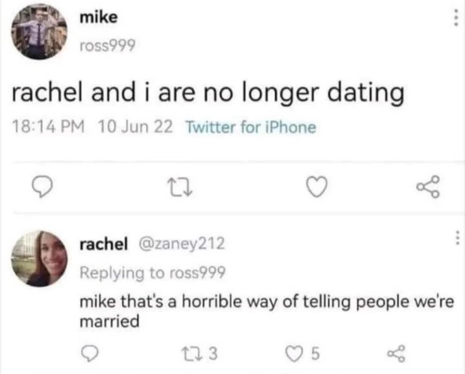
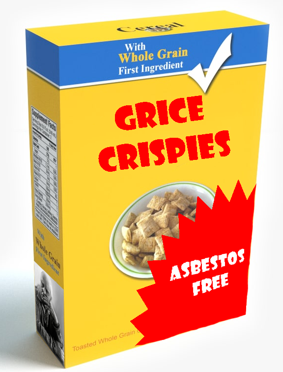
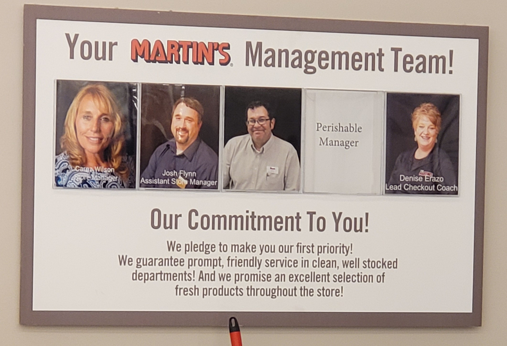
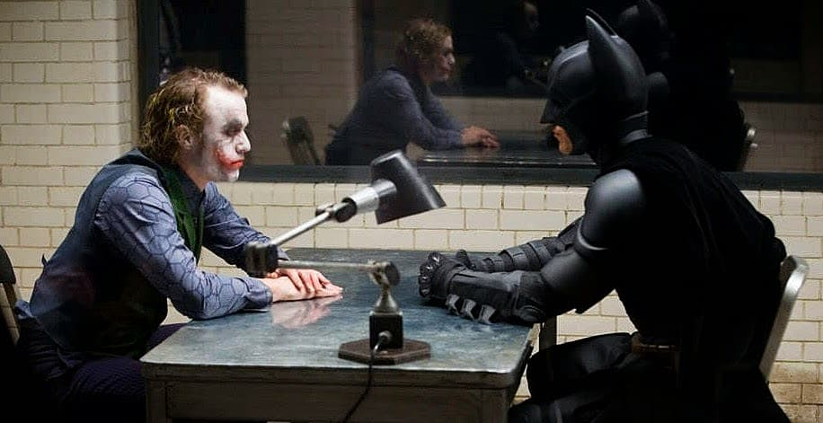
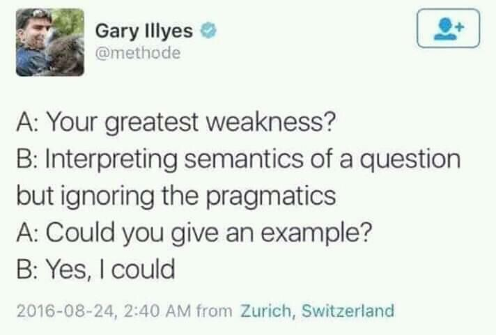

### Get SET! - You should fill in SET forms for your classes --- # Pragmatics: Language in Context ### Matt Zaslansky - LIGN 101 --- ### Last time, we started with the cooperative principle - "If people are acting cooperatively, we can skip a whole lot of pain" - ... and we talked about the maxims that help us define cooperation - Today, we'll talk about some of the things that grow out of that --- ### Today's Plan - Flouting vs. Violating maxims - Presupposition - Conversational Implicature - Speech acts - Deixis - All that we're leaving behind --- ### Grice's Maxims of... - Quality - Quantity - Relevance - Manner --- --- ### These maxims affect meaning - "Maria was alone in the room... or so she believed" - "Matt, who is absolutely not Batman, taught the class." - "Marvin left at 5:44 and 30 seconds." - "Did Ramchand ever work with Sam?" "He hates dogs." - "Did Sarah buy chicken?" "I think so". --- ### We assume people are following these maxims - It allows us to get a lot more done. - Less confirmation, clarification - More efficiency ---  ---  --- ### A Non-Gricean Screenplay Vic: Have you ever been in love? Leighanna-Jean: Yes. - V: With who? - LJ: Dylan. - V: Anything else you wanna say about Dylan? - LJ: No. - V: Is Dylan a boyfriend? - LJ: No. Can't be a boyfriend if you're in jail. --- ### A Non-Gricean Screenplay - V: [Changing topic] What is too serious to be joked about? - LJ: Is this a riddle? - V: No... it's a question. - LJ: Oh my gosh, I thought that was like, in school you know where they ask you those riddles. - FIN --- ### A Non-Gricean Screenplay https://www.youtube.com/shorts/XIVejEAeXs4 --- ### Violating a maxim - *Actually being uncooperative* by failing to follow these guidelines - Violating maxims actually messes up conversations - You will violate these maxims for your Semantics and Pragmatics Homework - You're gonna have fun with this. --- ### Violating a maxim - *Actually being uncooperative* by failing to follow these guidelines - Violating maxims actually messes up conversations --- ### Violating a maxim https://www.youtube.com/shorts/n7n3mKNgxIg --- <section class="clicker"></section> ### Which maxim is Princess Emily violating by responding "Europe!"? A) Quality B) Quantity C) Relevance D) Manner --- ### Which maxim is Princess Emily violating by responding "Europe!"? A) Quality B) Quantity C) Relevance D) <correct>Manner</correct> - This is primarily a violation of the Maxim of Manner, though there is some overlap in also violating the Maxim of Quantity as well. --- ### Flouting a Maxim - Intentionally violating a maxim *in a way that the listener can detect* to express a specific meaning - This *carries meaning* in the conversation - It can have great comedic effect - Unless it's undetected, the conversation is not messed up at all --- ### Examples of Maxim Flouting - "Oh, yes, Taco Bell is truly gourmet cuisine" (it is clearly not) - "Is this going to be on the test?" "That's a good question." - "How does my hair look?" "We haven't been to a cat show in a while." - "Should I build syntax trees or work on phonology problems for the exam?" "Yes" --- # Presupposition --- ## Presupposition Those things which are *implicitly assumed* about the discourse, participants, and world more generally --- ### Presupposition Examples - "Were you there when Matt made that bad joke?" - Presupposes that Matt made a bad joke - "Do you still eat breadsticks with every meal?" - Presupposes that the person ate breadsticks with every meal - "Did you meet the happy linguistics majors?" - Presupposes that happy linguistics majors exist - (Of course they do!) --- ### 'How is this different from entailment?!' - Presuppositions are assumptions made, but which aren't definitionally true - Presuppositions can be canceled - "Did you see Matt again in Vons?" "I've never seen him in person before!" - Presuppositions aren't canceled by sentence negation --- ### Entailment is canceled by negation - "Rebecca had a weird student" - Entails that she had a student - "Rebecca didn't have a weird student" - Doesn't entail that she had a student --- ### Presupposition survives negation - "Rebecca's student was weird" - Presupposes that she has a student - "Rebecca's student was not weird" - Still presupposes that she has a student --- ### Let's try some examples - Matt regretted eating the week-old enchiladas - Maria forgot to water the plants - Rebecca's student was very strange. - Once it started raining, nobody in San Diego could drive. - Matt threw his remote while lecturing again. --- ### Sentence negation doesn't cancel presuppositions - Matt didn't regret eating the week-old enchiladas - Maria didn't forget to water the plants - Once it started raining, everybody in San Diego could drive just fine. - Matt didn't throw his remote while lecturing again, it stayed in his hand. --- ### Weaponized Presuppositions - *Presuppositions can be made in bad faith, taking as presupposed things that aren't true or agreed upon?* - "Were you angry when you stole my cookies?" - "Have you stopped assigning evil homeworks?" - "Ugh, is your boyfriend being a jerk again?" - "All the hard work I've done to stop academic integrity violations hasn't been enough, we need to launch cheaters into the sun." - "You forgot to give your professors a gift for Teacher's Day" --- ### Presuppositions are neat - They're commonly used (and abused) - They're different from entailment in that they're true even when negated, and can be canceled. - And they express truths, not just assumptions - Speaking of which... --- ## Conversational Implicature --- ## Conversational Implicature What is suggested, but not expressed or entailed, by an utterance. - As a listener, you "draw an implicature" from a statement. --- ### What does "Jelena finally bought a hard drive to back up her computer" entail? --- ### "Jelena finally bought a hard drive to back up her computer" implies that... - Jelena didn't have one before - She'd needed one for a long time - Her computer wasn't backed up - Jelena owns a computer - Jelena used her own money --- ### "Jelena finally bought a hard drive to back up her computer" *does not* imply that... - Jelena is Serbian - Jelena owns a Mac - Jelena is a Dean at UCSD - She went to Costco for the hard drive - ... everything else --- ### Unlike entailments, implicatures do not need to be true in every situation --- ### "Jelena finally bought a hard drive to back up her computer" implies that... - Jelena didn't have one before - She'd needed one for a long time - Her computer wasn't backed up - Jelena owns a computer - Jelena used her own money --- ### Implicatures are possible *because* of the Cooperative Principle and Gricean Maxims - We can draw implicatures because we think people are cooperating - We are trying to find a way that the other person's phrasing is in accordance with the maxims - Behind every implicature is a maxim which would otherwise be violated --- ### "Robert might have eaten the cookie" - Implies that the speaker is unsure whether Robert ate the cookie. - If the cookie is known to have been eaten by Robert, this is a Quality violation. --- ### "Bub ate some of the cat treats" - Implies Bub didn't eat them all - This is called a "scalar implicature" - If she did, this statement is a Quantity violation --- ### "John, who is 100% not a lizard person, is coming to dinner" - Implies that John might, in fact, be a lizard person - If he is not, this statement is a Relevance violation --- ### "Who do you think stole the cookie?" "I heard Ruaridh was in town" - Implies reason to believe that Ruaridh might have stolen the cookie - If not, this statement is a Relevance violation --- ### "Hey, you, did you write this note?" "No quiero responder a esta pregunta." - Implies that I don't speak English. - If I also speak English, this statement is a Manner violation --- ### Common implicatures - "You're interested in Ron? He cheated on his last girlfriend!" - "You claim you paid my client in full. Was this before or after your conviction for armed robbery?" - "Will I be getting fired?" "We've had to make some really tough decisions." - "Robert and Jiseung sure have been hanging out a lot" - "Lots of folks wear deodorant" - "It's getting late" --- ### Implicature is important - It's everywhere! - It can be intentional or unintentional - They can even be deceptive --- ### Deceptive Implicature - "Herman's Rice is Gluten Free!" - Implies that all other rice isn't - "You promise me that you didn't eat my cookie?" - "We've been friends for 10 years!" - "Do you have any overseas bank accounts in which you're storing money?" - "Pfft, no, I don't have any secret numbered swiss bank accounts" - In reality, he has several accounts in the Caymans - "Where were you last night?" - "Home" - (No mention of the 6 hours during which he was robbing a bank) ---  ---  --- ### Remember, the cooperative principle implies cooperation! - So, it doesn't always apply! -  --- ### Presupposition vs. Implicature vs. Entailment - Implicatures are *assumed* on the basis of the gricean maxims - Presuppositions are *stated directly in the sentence*, as a preamble to the full meaning - They can be cancelled or corrected in conversation - Entailments *cannot* be cancelled, they're inherent to the meaning --- ### Implicatures are implicit - "Wow, so many students in the linguistics department seem happy!" - "Why don't more people who want to be cool at parties declare linguistics majors?" - "I wonder why people in other majors are so much less interesting?" - "It must be so hard for awesome people who never find out about linguistics and never reach their full potential" --- ### Presuppositions are explicit - "Now that you've decided to spend more time studying for your Linguistics classes, are you happier?" - "Once you declare your LING major, you'll find unfathomed joy" - "I wonder why you're taking so long to dedicate your life to the academic study of language?" - "Is it just me, or are you more interesting since you started thinking about declaring a LING major?" --- ### Presuppostions can be cancelled, entailments can't - "You seem happier since you declared a LING major." "I haven't declared it yet, but knowing I will brings joy!" - "Did you take a lyft because it's raining?" "It's not raining yet, I'm just lazy" - "Murray brought Chicken and chips." \*"Yeah, that's true, but he didn't bring chips." - "I bought a new Toyota." \*Agreed, but you didn't purchase a new Toyota". --- ### Implicature is an important part of Pragmatics - ... and it stems from the cooperative principle, as well as conversational context - But there are other elements of conversation which stem from the context as well! --- # Speech Acts and Performative Speech --- ### Sometimes, a statement is more than just a statement - Most speech is declarative, interrogative, or serves to expand the discourse - Asking questions, making statements, and interacting - Sometimes, talking itself *is the action* --- ## Speech Acts ("Performative Speech") Sentences which *accomplish actions* by being uttered --- ### Speech act examples - "I declare you to be married" - "I sentence you to fifteen hours of community service" - "I swear that I didn't steal your cookie" - "I apologize for eating your cookie" - "I agree to your terms" - "I formally object to your doing this" --- ### Speech acts are an odd kind of speech - ... with four important characteristics --- ### Speech acts are always in the present - "I swore that I didn't steal your cookie" vs. "I swear I didn't..." - "I apologized for eating the cookie" vs. "I apologize for eating the cookie" - "I will agree to your terms" isn't "I agree to your terms" --- ### Speech acts are always 1st Person - "I agree to your terms" vs. "You agree to my terms" - "She declares you husband and wife" - "Robert swears he never ate the cookie" - "We the Jury find the defendant Guilty" --- ### Speech acts always use a subset of performative verbs - "I walk into the room" isn't a speech act - "I say you're going to enjoy HW4" isn't a speech act either - "I brush my teeth" sure isn't. --- ### Speech acts depend on social context - "I sentence you to 15 hours of community service" requires you to be a judge - "I declare you married" requires you to be a licensed officiant - "I apologize for eating your cookie" only works when said to the person whose cookie you stole. - There are often other rituals involved (e.g. placing your hand on a holy book or object, a hand-shake, a wedding ceremony) --- ### Not all things are speech acts... <video controls src="video/i_declare_bankruptcy.m4v"></video> --- <section class="clicker"></section> ### Which of the below sentences is a speech act? A) "We ate ten cookies last night." B) "I might have eaten ten cookies last night." C) "I swear to you, I have no idea who ate the cookies." D) "I formally declared Sooyoung to be a competent researcher." E) "She sentenced Karla to three weeks of house arrest." --- ### Which of the below sentences is a speech act? A) "We ate ten cookies last night." B) "I might have eaten ten cookies last night." C) <correct>"I swear to you, I have no idea who ate the cookies."</correct> D) "I formally declared Sooyoung to be a competent researcher." E) "She sentenced Karla to three weeks of house arrest." --- ### That context dependence is why these land in Pragmatics - ... and why they're tough to interpret outside of that context --- ### There are other things that depend on context --- # Deixis --- ### A note on the ground outside: "Meet me here tomorrow at this time" This note is uninterpretable - Where's here? - Who's me? - When's tomorrow? At what time? --- ### These are all "deictic" expressions - They make reference to the discourse context, and don't have meaning outside of it --- ## Deictic Words Words whose meaning depends on the conversational context --- ### Types of Deictic Words - Pronouns: Me, Us, Him, Her, It, Them - Temporal Expressions: Today, Next Month, Now, Then, Soon - Locatives: Here, there, close, across the street - Demonstratives: This, That, The other, those --- <section class="clicker"></section> ### Which sentence *does not* contain a deictic word? A) "Rick and Graham had their wedding there. B) "I'm not sure who you're talking about." C) "Mahesh will see to it next week." D) "Sally took some students out to dinner at a Sushi restaurant." E) "John saw a coffee shop across the parking lot." --- ### Which sentence *does not* contain a deictic word? A) "Rick and Graham had their wedding there. B) "I'm not sure who you're talking about." C) "Mahesh will see to it next week." D) <correct>"Sally took some students out to dinner at a Sushi restaurant."</correct> E) "John saw a coffee shop across the parking lot." --- ### Deictic Expressions need context to be understood - This is a big problem in natural language processing - "Jian will meet you here." - "Ron scheduled her for two weeks out" - "She'll need to come back for a consult shortly" - "Mark's parked across the street from there." --- ### Many of these things depend on the past elements of the conversation - "Jian will take care of it next week" - "They're gonna have a great time" - "The cat will win the show for sure" --- ### We've seen this before already - "the" is the "definite" article - Refers to something already defined - "a" is the "indefinite" article - Refers to something which hasn't yet been defined --- ### Definiteness vs. Indefiniteness - "Did you go to (a/the) store?" - "I went to the store" vs. "I went to THE STORE" - "I saw (a/the) man last week" - "(A/the) handyman can fix the door" - "My cat is going to be in (a/the) show" - We know the referents in part based on discourse! - This is called "Anaphora", resolving the referents of different terms --- ### There's plenty more to the "information structure" of discourse - Which is new information, which is old information? - Who does what refer to? - What is being contrasted? - ... but that's a whole other bag of worms --- ### So, that's Pragmatics - The idea that the meaning of some things is inseparable from the discourse context - ... and the final of the major subfields we're going to terribly, TERRIBLY under-describe ---  --- # The Linguistic Subfields --- ### We've now talked about the "major subfields" of Linguistics - Phonetics - Phonology - Morphology - Syntax - Semantics - Pragmatics --- ### (There are other fields, but we'll get to that later) --- ### We've treated them all as independent - ... but they're really not - Let's take a few minutes to watch them mix --- ### Syntax and Phonetics - **Prosody!** - Prosody governs all the elements of speech that aren't vowels or consonants --- ### Incorrect Prosody is a great way to bother people - "I'm going to the store to get peas, carrots, milk, cat food and cereal" - "I saw the Duke of Edinburgh speak" - "Did you see me at Vons? --- ### From T.S Eliot's *The Wasteland* > What are the roots that clutch, what branches grow<br> Out of this stony rubbish? Son of man,<br> You cannot say, or guess, for you know only<br> A heap of broken images, where the sun beats,<br> And the dead tree gives no shelter, the cricket no relief,<br> And the dry stone no sound of water. Only<br> There is shadow under this red rock,<br> (Come in under the shadow of this red rock),<br> And I will show you something different from either<br> Your shadow at morning striding behind you<br> Or your shadow at evening rising to meet you;<br> I will show you fear in a handful of dust. --- ### From T.S Eliot's *The Wasteland* > What are the roots that clutch, what branches grow<br> Out of this stony rubbish? Son of man,<br> You cannot say, or guess, for you know only<br> A heap of broken images, where the sun beats,<br> And the dead tree gives no shelter, the cricket no relief,<br> And the dry stone no sound of water. Only<br> There is shadow under this red rock,<br> (Come in under the shadow of this red rock),<br> And I will show you something different from either<br> Your shadow at morning striding behind you<br> Or your shadow at evening rising to meet you;<br> I will show you fear in a handful of dust. <audio data-autoplay src="video/wasteland_tts.mp3"></audio> --- ### "Wow, text to speech is hard. I wonder why... I should take LIGN 168!" - <img class="r-stretch" src="img/plug.jpg"> --- ### Phonetics and Pragmatics - Stress for Contrastive Focus - "No, I saw STEVE last weekend" - "Tyresha went to the park last weekend" - "I went to the store" - "I went to THE STORE" --- ### Morphology and Phonology - Refrigerate (ɹə'fɹɪdʒɚeɪt) - Refrigerator (ɹə'fɹɪdʒɚeɪɾɚ) - Photograph (foʊɾə'gɹæf) - Photographer (fə'tɑgɹəfɚ) --- ### Syntax and Semantics - We've been all over that already - Verb frames, argument structure, etc. --- ### Syntax and Pragmatics - "I saw John last weekend" - "It was John that I saw last weekend" - "John is who I saw last weekend" - "Last weekend, I saw John" - "John, I saw last weekend" - "John? Saw him last weekend I did." --- ### Plus there are all the fields we haven't talked about yet... - Language Change/Historical Linguistics - Sociolinguistics - Psycholinguistics - Computational Linguistics - Neurolinguistics - Language Acquisition --- ### Every subfield interacts with every other subfield - These are not actually separate things, but a schema for representing knowledge in the field - We think about these as regions, but it's hard to draw exact lines - ... and the lines are different in each language - You need to know all of them! - P-side and S-side linguists are a thing, and I'll stick my neck out for M-side - Yes, we all learn the IPA --- ## Another plug!: Planning for your LING Major! --- ### Learn more about our majors [here](https://linguistics.ucsd.edu/undergrad/majors/index.html) - General Lingustics - "Which subfield do you like?" "Yes" - Speech and Language Sciences - This is how you can aim yourself towards Speech Pathology and Audiology - Cognition and Language - Focuses on language and the brain - Language and Society - Focuses on language and social issues - Language Studies - Focus on your language of choice --- ### There is one main sequence - Phonetics, then Phonology, then Morphology - Going out of order is a *bad* idea - The 120 instructor might let you, but you shouldn't do it unless you're ready to devote a lot of time to learning IPA and phonology - We also have [a linguistics minor](https://linguistics.ucsd.edu/undergrad/majors/general-linguistics.html) - Contact <linginfo@ling.ucsd.edu> for more information about the major --- ### Wrapping up - Conversational Maxims allow us to imply things with language - Implicature is everywhere - We can assume presuppositions are a thing - Speech acts are a thing - Deixis is referentacular - Pragmatics is Contextual - ... and you cannot hide from any element of language --- ## Next week - Language Change and AI --- <huge>Thank you!</huge>